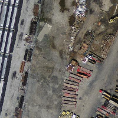
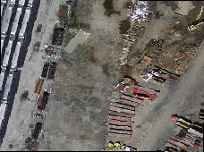
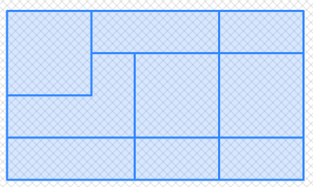

Name
ST_Transform — ラスタを既知の空間参照系から他の既知の空間参照系に、指定したリサンプリングアルゴリズムで投影変換します。新しいピクセル値のリサンプリングアルゴリズムとして最近傍補間 ('NearestNeighbor' (米式綴り方))、双線形補間 ('Bilinear')、3次補間 ('Cubic')、3次スプライン補間 ('CubicSpline')、ランチョス補間 ('Lanczos')を用います。デフォルトは最近傍補間です。
Synopsis
raster ST_Transform(raster rast, integer srid, text algorithm=NearestNeighbor, double precision maxerr=0.125, double precision scalex, double precision scaley);
raster ST_Transform(raster rast, integer srid, double precision scalex, double precision scaley, text algorithm=NearestNeighbor, double precision maxerr=0.125);
raster ST_Transform(raster rast, raster alignto, text algorithm=NearestNeighbor, double precision maxerr=0.125);
説明
ラスタを既知の空間参照系から他の既知の空間参照系に、指定したリサンプリングアルゴリズムで投影変換します。algorithmが指定されていない場合には'NearestNeighbor'とし、maxerrorが指定されていない場合には0.125とします。
アルゴリズム指定オプションは'NearestNeighbor', 'Bilinear', 'Cubic', 'CubicSpline', 'Lanczos'です。詳細についてはGDAL Warp resampling methodsをご覧ください。
ST_TransformはしばしばST_SetSRIDと混同されます。ST_Transformは、ある空間参照系から別の空間参照系に変更する際に、実際にラスタの座標を変更します (かつピクセル値のリサンプリングを行います)が、ST_SetSRIDは単にラスタの空間参照系識別子を変更するだけです。
三つ目の形式は、他の形式と違い、aligntoとして参照ラスタが求められます。投影変換したラスタは参照ラスタの空間参照系 (SRID)に投影変換して、参照ラスタと同じアラインメントを持つようにします (ST_SameAlignmentがTRUEになるようにします)。
![[Note]](../images/note.png) | |
変換機能が思ったように働かない場合には、環境変数PROJSOをPostGISが使用する投影変換ライブラリの.soまたは.dllに指定する必要があるかも知れません。ファイル名の指定だけ必要です。Windowsでの例として、コントロールパネル->システム->システムの詳細設定->環境変数で、 |
![[Warning]](../images/warning.png) | |
タイルのカバレッジを変換する時には、ほとんどの場合で、「例: 三つ目の形式」で示す通り、同じアラインメントになり、かつタイル内に隙間がなくなるようにするために、参照ラスタを使用したくなります。 |
Availability: 2.0.0 GDAL 1.6.1以上が必要です。
Enhanced: 2.1.0 ST_Tranfrorm(rast, alignto)の形式を追加しました。
例
SELECT ST_Width(mass_stm) As w_before, ST_Width(wgs_84) As w_after,
ST_Height(mass_stm) As h_before, ST_Height(wgs_84) As h_after
FROM
( SELECT rast As mass_stm, ST_Transform(rast,4326) As wgs_84
, ST_Transform(rast,4326, 'Bilinear') AS wgs_84_bilin
FROM aerials.o_2_boston
WHERE ST_Intersects(rast,
ST_Transform(ST_MakeEnvelope(-71.128, 42.2392,-71.1277, 42.2397, 4326),26986) )
LIMIT 1) As foo;
w_before | w_after | h_before | h_after
----------+---------+----------+---------
200 | 228 | 200 | 170
 元のラスタはメートル単位のマサチューセッツ州平面 (mass_stm) |  WGS84経度緯度に変換した後 (wgs_84) | 最近傍補間の代わりに双線形補間を使ってWGS84経度緯度に変換した後 (wgs_84_bilin) |
例: 三つ目の形式
次に示す例は、ST_Transform(raster, srid)とST_Transform(raster, alignto)との違いを示しています。
WITH foo AS (
SELECT 0 AS rid, ST_AddBand(ST_MakeEmptyRaster(2, 2, -500000, 600000, 100, -100, 0, 0, 2163), 1, '16BUI', 1, 0) AS rast UNION ALL
SELECT 1, ST_AddBand(ST_MakeEmptyRaster(2, 2, -499800, 600000, 100, -100, 0, 0, 2163), 1, '16BUI', 2, 0) AS rast UNION ALL
SELECT 2, ST_AddBand(ST_MakeEmptyRaster(2, 2, -499600, 600000, 100, -100, 0, 0, 2163), 1, '16BUI', 3, 0) AS rast UNION ALL
SELECT 3, ST_AddBand(ST_MakeEmptyRaster(2, 2, -500000, 599800, 100, -100, 0, 0, 2163), 1, '16BUI', 10, 0) AS rast UNION ALL
SELECT 4, ST_AddBand(ST_MakeEmptyRaster(2, 2, -499800, 599800, 100, -100, 0, 0, 2163), 1, '16BUI', 20, 0) AS rast UNION ALL
SELECT 5, ST_AddBand(ST_MakeEmptyRaster(2, 2, -499600, 599800, 100, -100, 0, 0, 2163), 1, '16BUI', 30, 0) AS rast UNION ALL
SELECT 6, ST_AddBand(ST_MakeEmptyRaster(2, 2, -500000, 599600, 100, -100, 0, 0, 2163), 1, '16BUI', 100, 0) AS rast UNION ALL
SELECT 7, ST_AddBand(ST_MakeEmptyRaster(2, 2, -499800, 599600, 100, -100, 0, 0, 2163), 1, '16BUI', 200, 0) AS rast UNION ALL
SELECT 8, ST_AddBand(ST_MakeEmptyRaster(2, 2, -499600, 599600, 100, -100, 0, 0, 2163), 1, '16BUI', 300, 0) AS rast
), bar AS (
SELECT
ST_Transform(rast, 4269) AS alignto
FROM foo
LIMIT 1
), baz AS (
SELECT
rid,
rast,
ST_Transform(rast, 4269) AS not_aligned,
ST_Transform(rast, alignto) AS aligned
FROM foo
CROSS JOIN bar
)
SELECT
ST_SameAlignment(rast) AS rast,
ST_SameAlignment(not_aligned) AS not_aligned,
ST_SameAlignment(aligned) AS aligned
FROM baz
rast | not_aligned | aligned
------+-------------+---------
t | f | t
アラインメントなし
|  アラインメントあり
|